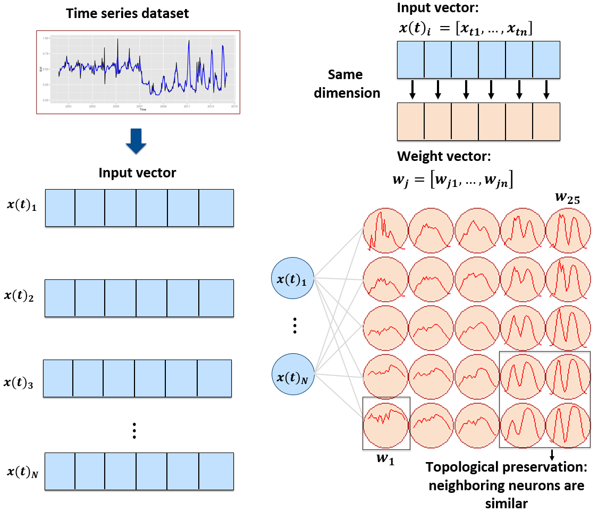
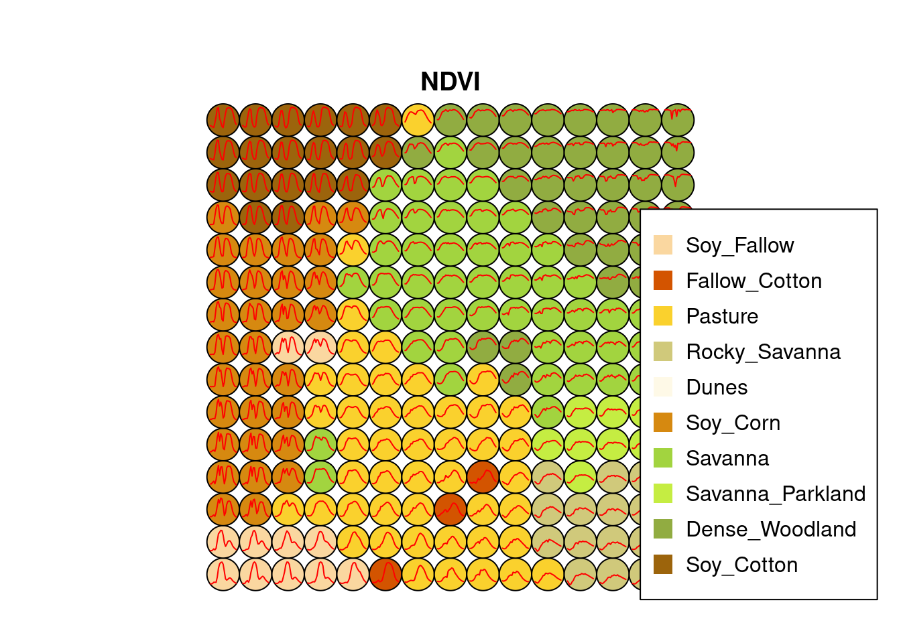
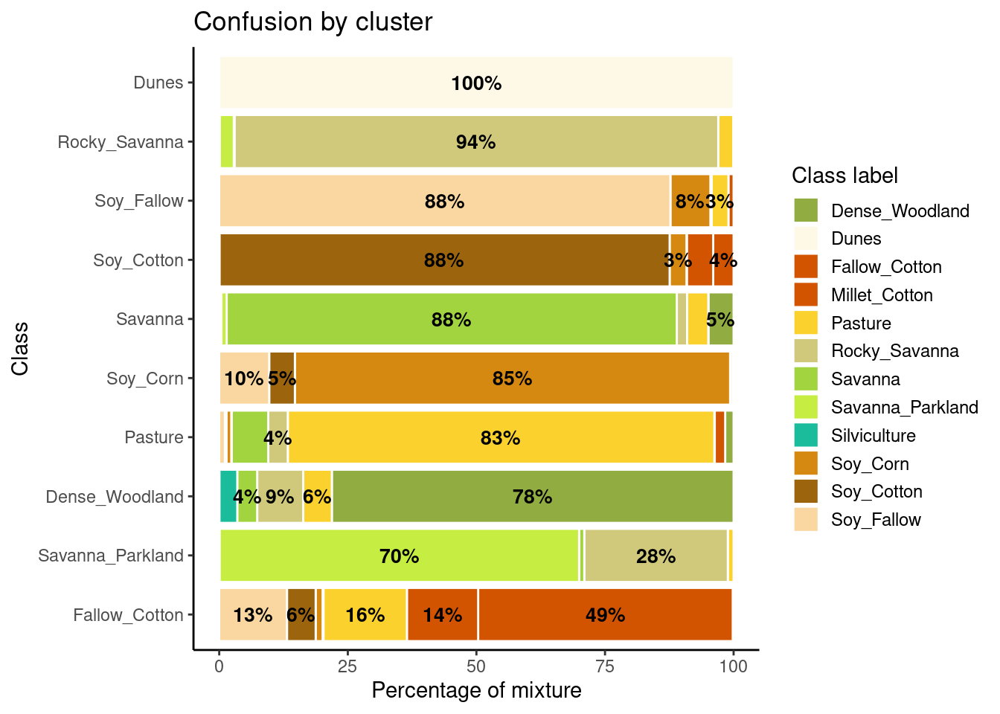
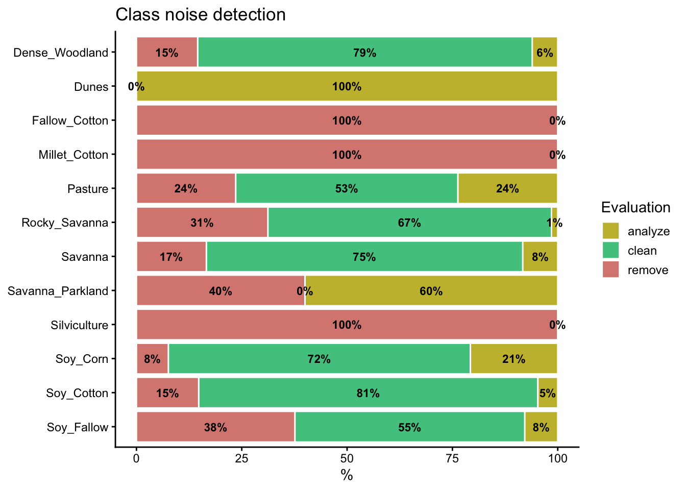
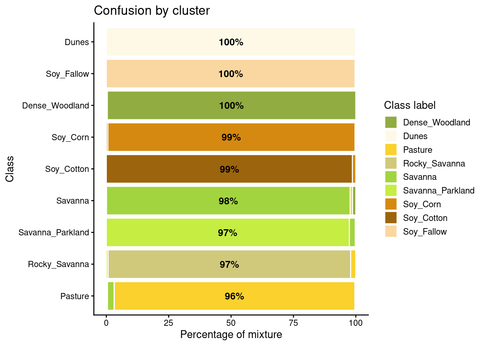
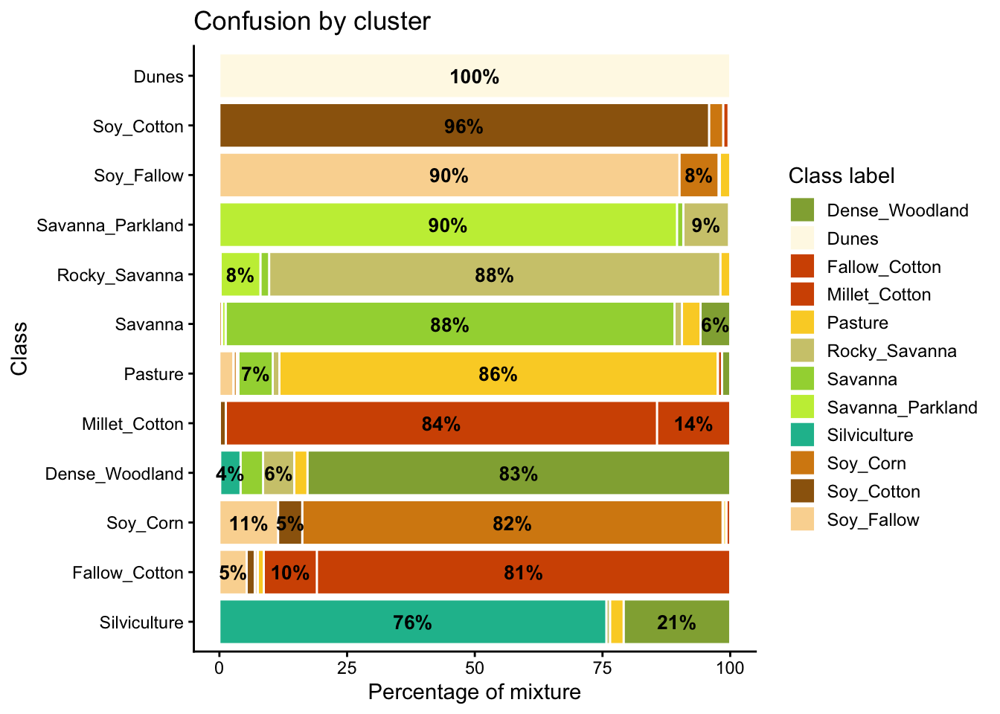

8 Quality control of training sets for agricultural statistics
Configurations to run this chapter
8.1 Outline
Selecting good training samples for machine learning classification of satellite images is critical to achieving accurate results. Experience with machine learning methods has shown that the number and quality of training samples are crucial factors in obtaining accurate results. This chapter presents pre-processing methods to improve the quality of samples and eliminate those that may have been incorrectly labelled or possess low discriminatory power. This chapter explains the basics of machine learning and provides examples of designing and using good training sets. The text explains k-fold validation, SOM clustering and sample imbalance removal, with examples in R.
The examples of the chapter deals with data from satellite image time series. Nevertheless, the principle hare explained are useful for other kinds of satellite data used in agricultural statistics.
8.2 Validation
Cross-validation is a technique to estimate the inherent prediction error of a model [1]. Since cross-validation uses only the training samples, its results are not accuracy measures unless the samples have been carefully collected to represent the diversity of possible occurrences of classes in the study area [2]. In practice, when working in large areas, it is hard to obtain random stratified samples which cover the different variations in land classes associated with the ecosystems of the study area. Thus, cross-validation should be taken as a measure of model performance on the training data and not an estimate of overall map accuracy.
Cross-validation uses part of the available samples to fit the classification model and a different part to test it. The k-fold validation method splits the data into \(k\) partitions with approximately the same size and proceeds by fitting the model and testing it \(k\) times. At each step, we take one distinct partition for the test and the remaining \({k-1}\) for training the model and calculate its prediction error for classifying the test partition. A simple average gives us an estimation of the expected prediction error. The recommended choices of \(k\) are \(5\) or \(10\) [1].
In waht follows, we provide an example of 5-fold validation using a data set containing 1,882 labeled samples of land classes in Mato Grosso state of Brazil. The samples have time series extracted from the MODIS MOD13Q1 product from 2000 to 2016, provided every 16 days at 250 m resolution in the Sinusoidal projection. Based on ground surveys and high-resolution imagery, it includes samples of seven classes: Forest, Cerrado, Pasture, Soy_Fallow, Soy_Cotton, Soy_Corn, and Soy_Millet.
rfor_validate_mt <- sits_kfold_validate(
samples = samples_matogrosso_mod13q1,
folds = 5,
ml_method = sits_rfor(),
multicores = 5
)
rfor_validate_mtConfusion Matrix and Statistics
Reference
Prediction Pasture Soy_Corn Soy_Millet Soy_Cotton Cerrado Forest Soy_Fallow
Pasture 340 3 6 0 0 0 0
Soy_Corn 1 346 7 17 0 0 0
Soy_Millet 0 10 164 0 0 0 2
Soy_Cotton 1 5 2 335 0 0 0
Cerrado 2 0 0 0 378 2 0
Forest 0 0 0 0 1 129 0
Soy_Fallow 0 0 1 0 0 0 85
Overall Statistics
Accuracy : 0.9673
95% CI : ( 0.9582, 0.975 )
Kappa : 0.9606
Statistics by Class:
Class: Pasture Class: Soy_Corn Class: Soy_Millet
Prod Acc (Recall) 0.9884 0.9505 0.9111
User Acc (Precision) 0.9742 0.9326 0.9318
F1 score 0.9812 0.9415 0.9213
Class: Soy_Cotton Class: Cerrado Class: Forest
Prod Acc (Recall) 0.9517 0.9974 0.9847
User Acc (Precision) 0.9767 0.9895 0.9923
F1 score 0.9640 0.9934 0.9885
Class: Soy_Fallow
Prod Acc (Recall) 0.9770
User Acc (Precision) 0.9884
F1 score 0.9827The results show a good validation, reaching 96% accuracy. However, this accuracy does not guarantee a good classification result. Cross-validation measures how well the model fits the training data. Using these results to measure classification accuracy is only valid if the training data is a good sample of the entire dataset. Regional differences in soil and climate conditions for large areas will lead the same classes to have different spectral responses. Field analysts may be restricted to places they have access (e.g., along roads) when collecting samples. An additional problem is mixed pixels. Expert interpreters select samples that stand out in fieldwork or reference images. Border pixels are unlikely to be chosen as part of the training data. For all these reasons, cross-validation results are used to measure how good is the fit of the model to the training samples and do not measure classification accuracy.
8.3 Quality control using self-organised maps (SOM)
This section presents a clustering technique based on self-organizing maps (SOM) for quality control of training samples. SOM is a dimensionality reduction technique [3], where high-dimensional data is mapped into a two-dimensional map, keeping the topological relations between data patterns. As shown in Figure 8.1, the SOM 2D map is composed of units called neurons. Each neuron has a weight vector, with the same dimension as the training samples. At the start, neurons are assigned a small random value and then trained by competitive learning. The algorithm computes the distances of each member of the training set to all neurons and finds the neuron closest to the input, called the best matching unit.

The input data for quality assessment is a set of training samples, which are high-dimensional data; for example, a time series with 25 instances of 4 spectral bands has 100 dimensions. When projecting a high-dimensional dataset into a 2D SOM map, the units of the map (called neurons) compete for each sample. Each time series will be mapped to one of the neurons. Since the number of neurons is smaller than the number of classes, each neuron will be associated with many time series. The resulting 2D map will be a set of clusters. Given that SOM preserves the topological structure of neighborhoods in multiple dimensions, clusters that contain training samples with a given label will usually be neighbors in 2D space. The neighbors of each neuron of a SOM map provide information on intraclass and interclass variability, which is used to detect noisy samples. The methodology of using SOM for sample quality assessment is discussed in detail in the reference paper [4].
The examples of this section use samples_cerrado_mod13q1, a set of time series from the Cerrado region of Brazil. The data ranges from 2000 to 2017 and includes 50,160 samples divided into 12 classes (Dense_Woodland, Dunes, Fallow_Cotton, Millet_Cotton, Pasture, Rocky_Savanna, Savanna, Savanna_Parkland, Silviculture, Soy_Corn, Soy_Cotton, and Soy_Fallow). Each time series covers 12 months (23 data points) from MOD13Q1 product, and has 4 bands (EVI, NDVI, MIR, and NIR). We use bands NDVI and EVI for faster processing.
# Take only the NDVI and EVI bands
samples_cerrado_mod13q1_2bands <- sits_select(
data = samples_cerrado_mod13q1,
bands = c("NDVI", "EVI"))
# Show the summary of the samples
summary(samples_cerrado_mod13q1_2bands)# A tibble: 12 × 3
label count prop
<chr> <int> <dbl>
1 Dense_Woodland 9966 0.199
2 Dunes 550 0.0110
3 Fallow_Cotton 630 0.0126
4 Millet_Cotton 316 0.00630
5 Pasture 7206 0.144
6 Rocky_Savanna 8005 0.160
7 Savanna 9172 0.183
8 Savanna_Parkland 2699 0.0538
9 Silviculture 423 0.00843
10 Soy_Corn 4971 0.0991
11 Soy_Cotton 4124 0.0822
12 Soy_Fallow 2098 0.0418 8.3.1 Generating a SOM map
To perform the SOM-based quality assessment, the first step is to run sits_som_map(), which uses the sits R package to compute a SOM grid, controlled by five parameters. The grid size is given by grid_xdim and grid_ydim. The starting learning rate is alpha, which decreases during the interactions. To measure the separation between samples, use distance (either “dtw” or “euclidean”). The number of iterations is set by rlen. When using sits_som_map() in machines which have multiprocessing support for the OpenMP protocol, setting the learning mode parameter mode to “patch” improves processing time. In Windows, please use “online”.
We suggest using the Dynamic Time Warping (“dtw”) metric as the distance measure. It is a technique used to measure the similarity between two temporal sequences that may vary in speed or timing [5]. The core idea of DTW is to find the optimal alignment between two sequences by allowing non-linear mapping of one sequence onto another. In time series analysis, DTW matches two series slightly out of sync. This property is useful in land use studies for matching time series of agricultural areas [6].
# Clustering time series using SOM
som_cluster <- sits_som_map(samples_cerrado_mod13q1_2bands,
grid_xdim = 15,
grid_ydim = 15,
alpha = 1.0,
distance = "dtw",
rlen = 20
)
# Plot the SOM map
plot(som_cluster)
The SOM grid shows that most classes are associated with neurons close to each other, although there are exceptions. Some Pasture neurons are far from the main cluster because the transition between open savanna and pasture areas is not always well defined and depends on climate and latitude. Also, the neurons associated with Soy_Fallow are dispersed in the map, indicating possible problems in distinguishing this class from the other agricultural classes. The SOM map can be used to remove outliers, as shown below.
8.3.2 Measuring confusion between labels using SOM
The second step in SOM-based quality assessment is understanding the confusion between labels. The function sits_som_evaluate_cluster() groups neurons by their majority label. Neurons are grouped into clusters, and there will be as many clusters as there are labels. The results shows the percentage of samples of each label in each cluster. Ideally, all samples of each cluster would have the same label. In practice, cluster contain samples with different label. This information helps on measuring the confusion between samples.
# Produce a tibble with a summary of the mixed labels
som_eval <- sits_som_evaluate_cluster(som_cluster)# Plot the confusion between clusters
plot(som_eval)
Many labels are associated with clusters where there are some samples with a different label. Such confusion between labels arises because sample labeling is subjective and can be biased. In many cases, interpreters use high-resolution data to identify samples. However, the actual images to be classified are captured by satellites with lower resolution. In our case study, a MOD13Q1 image has pixels with 250 m resolution. As such, the correspondence between labeled locations in high-resolution images and mid to low-resolution images is not direct. The bar plot shows some confusion between the labels associated with the natural vegetation typical of the Brazilian Cerrado (Savanna, Savanna_Parkland, Rocky_Savanna). This mixture is due to the large variability of the natural vegetation of the Cerrado biome, which makes it difficult to draw sharp boundaries between classes. Some confusion is also visible between the agricultural classes. The Fallow_Cotton class is a particularly difficult one since many of the samples assigned to this class are confused with Soy_Cotton and Millet_Cotton.
8.3.3 Detecting noisy samples using SOM
The third step in the quality assessment uses the discrete probability distribution associated with each neuron. This approach associates probabilities with frequency of occurrence. More homogeneous neurons (those with one label has high frequency) are assumed to be composed of good quality samples. Heterogeneous neurons (those with two or more classes with significant frequencies) are likely to contain noisy samples. The algorithm computes two values for each sample:
prior probability: the probability that the label assigned to the sample is correct, considering the frequency of samples in the same neuron. For example, if a neuron has 20 samples, of which 15 are labeled as
Pastureand 5 asForest, all samples labeled Forest are assigned a prior probability of 25%. This indicates that Forest samples in this neuron may not be of good quality.posterior probability: the probability that the label assigned to the sample is correct, considering the neighboring neurons. Take the case of the above-mentioned neuron whose samples labeled
Pasturehave a prior probability of 75%. What happens if all the neighboring neurons haveForestas a majority label? To answer this question, we use Bayesian inference to estimate if these samples are noisy based on the surrounding neurons [4].
To identify noisy samples, we take the result of the sits_som_map() function as the first argument to the function sits_som_clean_samples(). This function finds out which samples are noisy, which are clean, and which need to be further examined by the user. It requires the prior_threshold and posterior_threshold parameters according to the following rules:
- If the prior probability of a sample is less than
prior_threshold, the sample is assumed to be noisy and tagged as “remove”; - If the prior probability is greater or equal to
prior_thresholdand the posterior probability calculated by Bayesian inference is greater or equal toposterior_threshold, the sample is assumed not to be noisy and thus is tagged as “clean”; - If the prior probability is greater or equal to
prior_thresholdand the posterior probability is less thanposterior_threshold, we have a situation when the sample is part of the majority level of those assigned to its neuron, but its label is not consistent with most of its neighbors. This is an anomalous condition and is tagged as “analyze”. Users are encouraged to inspect such samples to find out whether they are in fact noisy or not.
The default value for both prior_threshold and posterior_threshold is 60%. The sits_som_clean_samples() has an additional parameter (keep), which indicates which samples should be kept in the set based on their prior and posterior probabilities. The default for keep is c("clean", "analyze"). As a result of the cleaning, about 900 samples have been considered to be noisy and thus to be possibly removed. We first show the complete distribution of the samples and later remove the noisy ones.
all_samples <- sits_som_clean_samples(
som_map = som_cluster,
prior_threshold = 0.6,
posterior_threshold = 0.6,
keep = c("clean", "analyze", "remove"))
# Print the sample distribution based on evaluation
plot(all_samples)
We now remove the noisy samples to improve the quality of the training set.
new_samples <- sits_som_clean_samples(
som_map = som_cluster,
prior_threshold = 0.6,
posterior_threshold = 0.6,
keep = c("clean", "analyze"))
# Print the new sample distribution
summary(new_samples)# A tibble: 9 × 3
label count prop
<chr> <int> <dbl>
1 Dense_Woodland 8519 0.220
2 Dunes 550 0.0142
3 Pasture 5509 0.142
4 Rocky_Savanna 5508 0.142
5 Savanna 7651 0.197
6 Savanna_Parkland 1619 0.0418
7 Soy_Corn 4595 0.119
8 Soy_Cotton 3515 0.0907
9 Soy_Fallow 1309 0.0338All samples of the classes which had the highest confusion with others(Fallow_Cotton, Silviculture, and Millet_Cotton) are marken as noisy been removed. Classes Fallow_Cotton and Millet_Cotton are not distinguishable from other crops. Samples of class Silviculture (planted forests) have removed since they have been confused with natural forests and woodlands in the SOM map. Further analysis includes calculating the SOM map and confusion matrix for the new set, as shown in the following example.
# Produce a new SOM map with the cleaned samples
new_cluster <- sits_som_map(
data = new_samples,
grid_xdim = 15,
grid_ydim = 15,
alpha = 1.0,
rlen = 20,
distance = "dtw")
# Evaluate the mixture in the new SOM clusters
new_cluster_mixture <- sits_som_evaluate_cluster(new_cluster)
# Plot the mixture information.
plot(new_cluster_mixture)
As expected, the new confusion map shows a significant improvement over the previous one. This result should be interpreted carefully since it may be due to different effects. The most direct interpretation is that Millet_Cotton and Silviculture cannot be easily separated from the other classes, given the current attributes (a time series of NDVI and EVI indices from MODIS images). In such situations, users should consider improving the number of samples from the less represented classes, including more MODIS bands, or working with higher resolution satellites. The results of the SOM method should be interpreted based on the users’ understanding of the ecosystems and agricultural practices of the study region.
The SOM-based analysis discards samples that can be confused with samples of other classes. After removing noisy samples or uncertain classes, the dataset obtains a better validation score since there is less confusion between classes. Users should analyse the results with care. Not all discarded samples are low-quality ones. Confusion between samples of different classes can result from inconsistent labeling or from the lack of capacity of satellite data to distinguish between chosen classes. When many samples are discarded, as in the current example, revising the whole classification schema is advisable. The aim of selecting training data should always be to match the reality on the ground to the power of remote sensing data to identify differences. No analysis procedure can replace actual user experience and knowledge of the study region.
8.4 Reducing samples imbalance
Many training samples for Earth observation data analysis are imbalanced. This situation arises when the distribution of samples associated with each label is uneven. Sample imbalance is an undesirable property of a training set since machine learning algorithms tend to be more accurate for classes with many samples. The instances belonging to the minority group are misclassified more often than those belonging to the majority group. Thus, reducing sample imbalance can positively affect classification accuracy [7].
The examples of this section use the same data set using for the SOM map analysis (samples_cerrado_mod13q1) which have been described above, using bands NDVI and EVI.
# Take only the NDVI and EVI bands
samples_cerrado_mod13q1_2bands <- sits_select(
data = samples_cerrado_mod13q1,
bands = c("NDVI", "EVI"))
# Show the summary of the samples
summary(samples_cerrado_mod13q1_2bands)# A tibble: 12 × 3
label count prop
<chr> <int> <dbl>
1 Dense_Woodland 9966 0.199
2 Dunes 550 0.0110
3 Fallow_Cotton 630 0.0126
4 Millet_Cotton 316 0.00630
5 Pasture 7206 0.144
6 Rocky_Savanna 8005 0.160
7 Savanna 9172 0.183
8 Savanna_Parkland 2699 0.0538
9 Silviculture 423 0.00843
10 Soy_Corn 4971 0.0991
11 Soy_Cotton 4124 0.0822
12 Soy_Fallow 2098 0.0418 The Cerrado dataset is highly imbalanced. The three most frequent labels (Dense Woodland, Savanna, and Pasture) include 53% of all samples, while the three least frequent labels (Millet-Cotton, Silviculture, and Dunes) comprise only 2.5% of the dataset. This is a good dataset to investigate the impact of rebalancing.
8.4.1 Producing a balanced training set
The function sits_reduce_imbalance() deals with training set imbalance; it increases the number of samples of least frequent labels, and reduces the number of samples of most frequent labels. Oversampling requires generating synthetic samples. The package uses the SMOTE method that estimates new samples by considering the cluster formed by the nearest neighbors of each minority label. SMOTE takes two samples from this cluster and produces a new one by randomly interpolating them [8].
To perform undersampling, sits_reduce_imbalance() builds a SOM map for each majority label based on the required number of samples to be selected. Each dimension of the SOM is set to ceiling(sqrt(new_number_samples/4)) to allow a reasonable number of neurons to group similar samples. After calculating the SOM map, the algorithm extracts four samples per neuron to generate a reduced set of samples that approximates the variation of the original one.
The sits_reduce_imbalance() algorithm has two parameters: n_samples_over and n_samples_under. The first parameter indicates the minimum number of samples per class. All classes with samples less than its value are oversampled. The second parameter controls the maximum number of samples per class; all classes with more samples than its value are undersampled. The following example uses sits_reduce_imbalance() with the Cerrado samples used in the previous chapter. We generate a balanced dataset where all classes have a minimum of 1000 and and a maximum of 1500 samples.
# Reducing imbalances in the Cerrado dataset
balanced_samples <- sits_reduce_imbalance(
samples = samples_cerrado_mod13q1_2bands,
n_samples_over = 1000,
n_samples_under = 1500,
multicores = 4)
# Show summary of balanced samples
# Some classes have more than 1500 samples due to the SOM map
# Each label has between 10% and 6% of the full set
summary(balanced_samples)# A tibble: 12 × 3
label count prop
<chr> <int> <dbl>
1 Dense_Woodland 1596 0.0974
2 Dunes 1000 0.0610
3 Fallow_Cotton 1000 0.0610
4 Millet_Cotton 1000 0.0610
5 Pasture 1592 0.0971
6 Rocky_Savanna 1476 0.0901
7 Savanna 1600 0.0976
8 Savanna_Parkland 1564 0.0954
9 Silviculture 1000 0.0610
10 Soy_Corn 1588 0.0969
11 Soy_Cotton 1568 0.0957
12 Soy_Fallow 1404 0.0857To assess the impact of reducing imbalance, we use the SOM cluster technique described in the previous chapter. In synthesis, SOM builds clusters out of the training data. Ideally, each cluster would be composed by a samples of a single class. Mixed clusters indicate possible confusion between samples of different classes. We fist build a SOM using sits_som_map() and then assess the results with sits_som_evaluate_clusters().
# Clustering time series using SOM
som_cluster_bal <- sits_som_map(
data = balanced_samples,
grid_xdim = 15,
grid_ydim = 15,
alpha = 1.0,
distance = "dtw",
rlen = 20)
# Produce a tibble with a summary of the mixed labels
som_eval <- sits_som_evaluate_cluster(som_cluster_bal)
# Show the result
plot(som_eval) Warning: Removed 38 rows containing missing values or values outside the scale range
(`geom_text()`).
As shown in Figure 8.5, the balanced dataset shows less confusion per label than the unbalanced one. In this case, many classes that were confused with others in the original confusion map are now better represented. Reducing sample imbalance should be tried as an alternative to reducing the number of samples of the classes using SOM. In general, users should balance their training data for better performance.
Reducing imbalance is an important method to improve quality of training data. As a general rule, users should work with balanced sets, since experiments with sits show an improvement of classification accuracy in almost all cases.
8.4.2 Summary
Selecting good training samples for machine learning classification of satellite images is critical to achieving accurate results. Experience with machine learning methods has shown that the number and quality of training samples are crucial factors in obtaining accurate results [9]. Large and accurate datasets are preferable, regardless of the algorithm used, while noisy training samples can negatively impact classification performance [10]. Thus, it is beneficial to use pre-processing methods to improve the quality of samples and eliminate those that may have been incorrectly labeled or possess low discriminatory power.
It is necessary to distinguish between wrongly labeled samples and differences resulting from the natural variability of class signatures. When working in a large geographic region, the variability of vegetation phenology leads to different patterns being assigned to the same label. A related issue is the limitation of crisp boundaries to describe the natural world. Class definitions use idealized descriptions (e.g., “a savanna woodland has tree cover of 50% to 90% ranging from 8 to 15 m in height”). Class boundaries are fuzzy and sometimes overlap, making it hard to distinguish between them. To improve sample quality, sits provides methods for evaluating the training data. For large datasets, we recommend using both imbalance-reducing and SOM-based algorithms. The SOM-based method identifies potential mislabeled samples and outliers that require further investigation. The methods for balancing training samples reduce bias in favour of classes of high occurrences. The results demonstrate a positive impact on the overall classification accuracy.